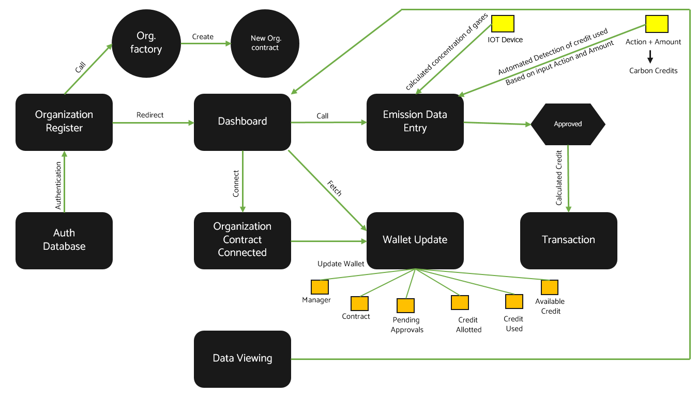
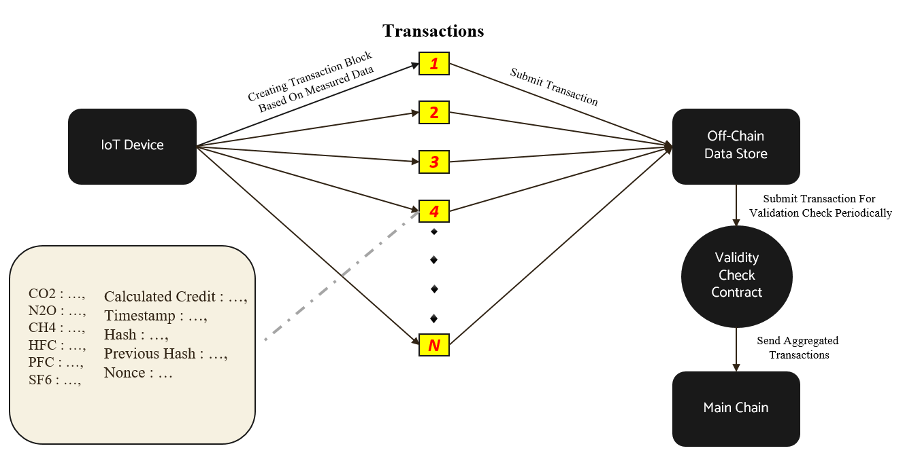

SCOPE 1(BURN)
A straightforward definition of scope 1 emissions: Direct emissions from sources owned or controlled by a reporting company. And a shorthand for scope 1 is “burn” because it includes things your business burns—fuel to heat or power buildings, vehicles, and other equipment. Scope 1 also includes accidental or fugitive emissions like chemical and refrigerant leaks and spills.
Examples:
Scope 1 emissions—again, also referred to as direct emissions—result from the combustion of fuels on-site. This includes oil and natural gas, gasoline and diesel fuel in vehicles and stationary equipment, as well as propane, lubricants, vegetable oil, biomass like wood, and any other fuels. Scope 1 emissions also include gases released from refrigerants in commercial cooling equipment like air conditioners and refrigerators, fire suppression systems, and certain industrial chemicals and processes.
Stationary combustion - Fuel—like oil and gas—burned in buildings or equipment owned or operated by your organization. Think boilers and other fuel-powered machinery used for industrial processes.
Mobile combustion sources - Fuel your organization purchases for owned or leased vehicles and mobile equipment (e.g., cars, trucks, company vehicles, gas-powered tools).
Fugitive emissions - Refrigeration - Chemical releases from AC and refrigeration equipment your organization owns or controls.
Fugitive emissions - Fire suppression - Chemical releases from or use of building fire suppression systems or equipment like fire extinguishers that your company owns or controls.

SCOPE 2(BUY)
Scope 2 emissions are indirect emissions generated from purchased energy—including electricity, steam, heating, and cooling. A simple shorthand you can use to remember scope 2 is “buy” because your organization typically buys energy to run its operations.
Examples: Scope 2 emissions come from purchased electricity, steam, heating, or cooling. You can usually calculate scope 2 emissions based on the consumption outlined in energy bills. What we mean when we say steam, heat, and cooling: it must be generated off-site. Essentially it’s what you purchase from a utility or other supplier—for instance, district heating and cooling, or steam used in industrial processes. It shouldn’t be confused with heat you generate on-site by using a boiler or furnace or cooling your facility with an electricity-powered AC unit.
The production and distribution of electricity you purchase from the utility or another supplier impact your scope 2 emissions. If your electricity mix is high in fossil fuels—if your supplier burns a lot of coal to produce your electricity—your scope 2 emissions will be higher than electricity produced by biomass, renewable electricity, or even natural gas.
SCOPE 3(BEYOND)
Scope 3 emissions are likely to be the largest share of your carbon emissions—typically 80-90%. But what are scope 3 emissions? Essentially, all the carbon emissions indirectly generated by a business: business travel, employee commutes, waste disposal, purchased goods and services, the goods you produce, end-of-life disposal of your products, transportation, distribution, and more.
Take, for example, a clothing brand. Its scope 3 emissions come from an array of places—vehicles that transport clothing to retailers, energy used in manufacturing (if at facilities not owned by the company, otherwise, these would be scope 1), energy used to grow raw material, energy used by consumers to wash and dry the clothing, and the greenhouse gas emissions generated as the materials decay in a landfill, the list goes on.
Examples:
Upstream emissions-producing activities (everything to produce your product)
Goods and services you purchase
Capital goods (like buildings, machinery, tools to make your product)
How materials are transported and distributed to your manufacturing facility
Waste generated in day-to-day operations
Business travel
Employee commutes
Leased assets
Downstream emissions-producing activities (everything to consume your product)
How your product gets to your customers via transportation and distribution
Processing of sold products
Use of sold products
Disposal or recycling of sold products
Franchises
Investments
The Benefits of Monitoring Carbon Emissions for a Business:
The private sector is often pointed at when looking for culprits of climate change. Reducing your carbon emissions seems to be the slogan of the year, but how do companies start with such a blurry task? How do we measure progress? Back in 1954, Peter Drucker wrote the premise of an answer: “what gets measured, gets managed.”
If a company really wants to become more sustainable, the first step it should take is trying to understand its current situation and start monitoring its carbon emissions.
Measuring carbon emissions is not an easy task. Major companies that do not have carbon measuring and reducing programmes have become the exception to the rule. Apple, Facebook and even oil giants like Shell or BP all report on their CO2 emissions. This is not just because these CEOs care about the environment.
Less CO2 = less costs
Identifying and quantifying CO2 emissions helps to identify excessive energy usage or other inefficiencies. Lowering GHG emissions typically goes hand in hand with increasing efficiency and cost-effectiveness in a company's processes.
Case Study:
Walmart identified through its GHG emissions that they spend a lot of energy on the heating and cooling of their buildings. Because of this, they installed around 10 000 high-efficiency rooftop heating and cooling units. These units avoid 614 000 tonnes of CO2 per year. This also led to €8 million in cost savings.
Access the carbon market:
In addition to the internal cost reductions, more and more companies have to pay a price for every tonne of CO2 they emit. This is the so-called carbon emission trading system.
Globally, already 57 carbon pricing systems have been implemented, 28 in the form of an Emission Trading System (ETS) and 29 carbon taxes. The value of traded global markets for carbon dioxide (CO2) allowances soared 250% between 2018 and 2019 to a record high of €144 billion. In an ETS, a maximum number of tonnes of CO2 is turned into allowances, and companies can buy and sell these allowances according to their emissions.
The other format, a carbon tax, is a set price you have to pay per unit of carbon emission. Within both carbon pricing systems, you are obliged to measure your emissions. A lot of people advocate that these systems are THE solution to make a real change.
On a trend level, more carbon pricing initiatives are emerging, prices for GHG emissions are on the rise and the private sector is implementing internal carbon pricing systems of its own. Monitoring and lowering your carbon emissions is not only becoming an obligation, but also a business opportunity to get ahead of competitors. All of this is only available, however, if your company measures its carbon emissions, the first step to survive the sustainable market shift.
Transparency is the new black:
Another very good reason to start measuring and reducing your carbon emissions is your brand image. Customers, whether company or individuals, care about who they do business with.
Sustainable conscience is on the rise, as demonstrated in the streets, polls and business circles. According to Euromonitor International’s latest sustainability survey, 54 % of global consumers believe that ethical purchase decisions make a difference. Clients are looking for ways to lower individual and collective carbon footprint, minimise waste, buy green products and get services from environmentally-friendly companies.
Transparency over emissions has become so basic that even the most polluting industries disclose their (vast) footprint. In a race to become the most sustainable carriers, major airlines like Easyjet and Delta have announced sweeping plans to measure, reduce and offset their respective carbon footprint.
The sustainable market is not going anywhere:
Sustainability awareness is something that is very likely to continue and grow in importance. In business terms: there is a growing market in sustainable consumer goods and services, demonstrated in the sustainable product sales graph in the U.S (see below). Due to the pull of these end-consumers, through the whole B2B supply chain the demand for more sustainable alternatives will rise. By measuring and reducing your carbon emissions, you can make scientifically supported and therefore credible statements about the sustainability performance of your company.
Consumers are not the only stakeholders that are sensitive to the image of a company. According to Deloitte's Millennial surveys, employees not only care a lot about the environment but are more attracted to companies that are environmentally aware. Company sustainability has become a weapon of choice in the ongoing talent war. Employees that identify with the values of the company are more likely to stay on board and are more motivated.
On the investor side, there is increasing sustainability awareness. Oxford University found that more than 80% of mainstream investors now consider ‘ESG’ – environmental, social and governance – information when making investment decisions.
This means that emerging companies have a higher chance to access investments when integrating environmental indicators to their business plan. As an established enterprise, collecting environmental data would provide another lens to better understand productivity, product and market performances.
CROWN MONKEY Approach to monitor emission of all scopes:
In Crown Monkey our primary goal is to automate the whole process of monitoring emissions from all three scopes to create trust and transparency in this process. For this we are using Blockchain and IoT integrated Technology, IoT devices are fixed at the the major emission points of organization and using our algorithm we convert emissions into carbon credits term refering Gloabal Warming Potential of GHGs.
For the emissions that cannot be detected by sensors in IoT devices we made a algorithm that follows GHG Protocol standards that automatically convert emission actions and their amount into equivalent carbon credit used.
As IoT devices gather a huge amount of data and submitting all the data to mainchain is not feasible and effects scalability of our whole application. So, to handle that we are proposing a method:
• Instead of sending all transaction blocks to mainchain we are sending it to offchain.
• But storing data offchain effects security and validity of data, To handle that we are writing a separate contract that will validate the transactions using block structure.
• Storing data offchain also may cause data unavailability problem(server crash) to deal with that we are sending aggregate transactions(one transactions in place of all transactions in that interval) periodically to the mainchain containing summary of that interval. This will enhance throughput of the whole process.
SCALIBILITY:
Scalability is an important consideration for blockchain networks, especially when it comes to transaction blocks and their impact on carbon credit applications. Let's break down the scenario you mentioned.
Transaction Blocks: In a blockchain, transaction blocks contain a group of transactions that are added to the chain in a sequential manner. The size of a transaction block can vary depending on the specific blockchain protocol and design choices. However, larger block sizes can lead to scalability challenges.
Carbon Credit Application: Carbon credit applications typically involve tracking and verifying carbon emissions data and associated credits. Storing this data on-chain can become problematic due to the potentially large volume of data generated by numerous participants. To address this, organizations often use off-chain solutions to store the detailed data while maintaining a summary or reference on the main chain.
Off-Chain Data Storage: Off-chain data storage solutions, such as databases or distributed file systems, offer scalability advantages for handling large volumes of data. These solutions can accommodate frequent updates and provide faster access to detailed information. However, it's important to ensure the integrity and security of off-chain data and establish a trust mechanism for the summarized data on the main chain.
Average Data on the Main Chain: To maintain the average data on the main chain while storing the detailed data off-chain, organizations can use aggregation techniques. Instead of storing every single transaction or data point on-chain, they can periodically calculate and store aggregated values, such as averages, totals, or other statistical summaries. These aggregated values serve as a representation of the off-chain data and help reduce the computational and storage requirements on the main chain.
Regarding scalability, the choice of blockchain protocol, consensus mechanism, and block size can significantly impact the capacity and throughput of the network. Some blockchain networks, such as Bitcoin, have limitations on block size and transaction throughput, resulting in scalability challenges. Other protocols, like Ethereum, have been exploring various solutions, such as layer-two scaling solutions (e.g., Plasma, Optimistic Rollups) and transitioning to proof-of-stake (PoS) consensus, to improve scalability.
